Runs every night at 03:00, unattended
219 clips in, 22 out.
A home PC watches the day's most-watched League of Legends clips on Twitch, keeps the best, and publishes a finished countdown video and three Shorts to YouTube before breakfast.
Where 197 clips were dropped
Each square is one clip from that night's Twitch top list. The 52 with pictures were downloaded and examined closely. Step through the filters, then select a picture to see what each one decided.
Cheap filters first, expensive ones last
Each stage is run by one of three kinds of worker. The free ones go first and discard most clips, so the one with a daily allowance only sees the survivors.
-
Plain code
Python, ffmpeg and signal processing. Free, fast and predictable. Measures loudness and motion, applies rules, renders video.
-
Model on the home GPU
A 4-billion-parameter vision model (Qwen3-VL via Ollama) and Whisper for speech. Free, but slow on an 8 GB card.
-
Model in the cloud
Google Gemini watches whole clips with sound. It runs on the free tier, so it has a strict daily allowance.
One night, stage by stage
Times are from the log of the 23 September run. It finished at 05:52 with exit code 0.
-
Plain code
Check the machine, read the comments
A quick self-check confirms ffmpeg, the GPU, Ollama and the API keys, so a broken setup fails in seconds instead of an hour in. Gemini then reads comments on recent uploads. A viewer writing “#3 was boring” is mapped to the third clip of that video, and only complaints several viewers agree on become proposals for the owner.
-
Plain code
Fetch the day's top clips
The Twitch API lists the most-watched League of Legends clips created between midnight and midnight, Amsterdam time: title, streamer, language tag and view count. That night: 219 clips. Nothing is downloaded yet, because most will be dropped on this information alone.
-
8 minPlain code
Drop what code alone can judge
Channels outside the supported languages go first (29 that night), along with a hand-kept blacklist and tournament titles. The other 190 are downloaded in low quality and measured.
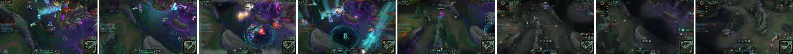
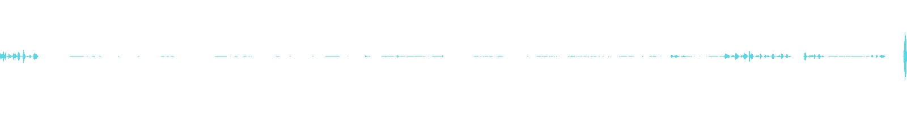
Motion compares eight tiny frames like these (160×90 pixels). Audio reads the waveform for loudness, spikes, pitch energy and how much of the clip is loud. This is the clip that became #2. A clip is dropped if it is quiet (audio below 0.22) or static (motion below 0.015). A title containing
penta
,1v5
oroutplay
skips the audio test: a silent pentakill once got thrown out for being quiet, and the streamer's own title is a stronger signal than their volume. The 141 that pass are ranked by title keyword, loudness and views; the top 52 go on.Thresholds and weights are set by hand. A logistic regression was once fitted to hand labels to suggest values, but the pipeline doesn't load it.
-
109 minModel on the home GPU
Ask a small vision model simple questions
The 52 are downloaded in full quality. A 4B vision model on the home GPU looks at still frames. Small models get multi-part questions wrong, so each question is asked on its own:
- Is this League of Legends gameplay?3 frames, majority vote
- Is this a professional tournament broadcast?1 frame
- How many kill notifications? Is there a multikill banner?Screen crops every 5 s
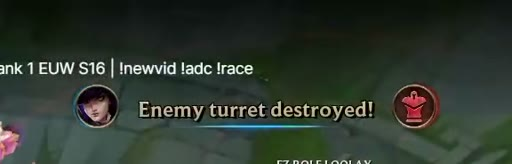
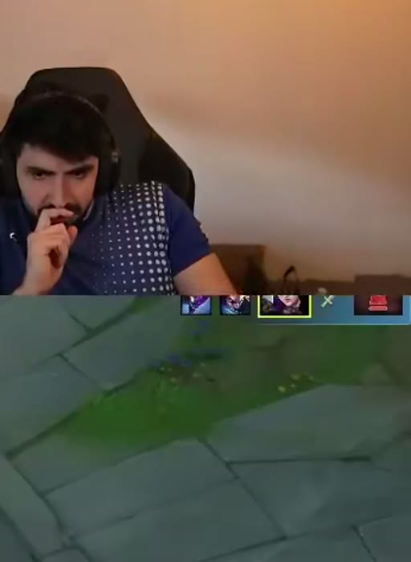
What the model was shown for clip #1 at 22 seconds: the announcement area and the kill feed. Crops let a small model read HUD text it would miss in the full frame. The model only describes; it never decides. Its answers are cached, and a plain function turns them into keep or reject:
# pipeline/filtering/vlm_filter.py · decide(), first match wins blacklisted streamer reject not gameplay (vote) reject pro broadcast reject keyword in title keep multikill banner keep kills confirmed, audio ≥ 0.30 keep loud reaction, audio ≥ 0.55 keep # not for Japanese titles anything else rejectBecause the rules live outside the model, changing a threshold re-runs in a second from the cache instead of costing another 109 minutes of GPU time. 35 clips were kept.
-
18 minModel in the cloud
Let a large model watch the whole clip
The 35 go to Gemini as video with sound. It must answer in a fixed JSON shape; an answer with a missing field counts as no answer. Its real verdict on clip #2:
{ "clip_focus": "gameplay", "play_quality": 9, "entertainment": 9, "what_happens": "The streamer playing Jhin gets a quadra kill in a jungle teamfight. Moments later, in the same fight, he secures a pentakill and reacts in excitement.", "best_moment_s": 32 }Code makes the call again: keep clips scoring 6+ on entertainment (7+ for pure reactions) or 7+ on play quality. The free tier allows 20 requests per model per day, so the stage walks a chain of models, each with its own allowance. It switched models once that night when the first was overloaded. With no key at all it falls back to the local verdicts and still makes a video. The survivors are ordered into a countdown: 22 clips, 12.9 minutes of video.
-
8 minModel on the home GPU
Transcribe and translate the streamers
Whisper detects each clip's language and translates the speech into English, with a timestamp on every word. Those timestamps drive the captions.
-
6 minPlain code
Assemble the video
ffmpeg renders the intro, then every clip with an animated name card, the countdown number and English captions, a slow-motion replay of the best moment for top-rated clips, and an outro. The GPU's video encoder is detected and used automatically.
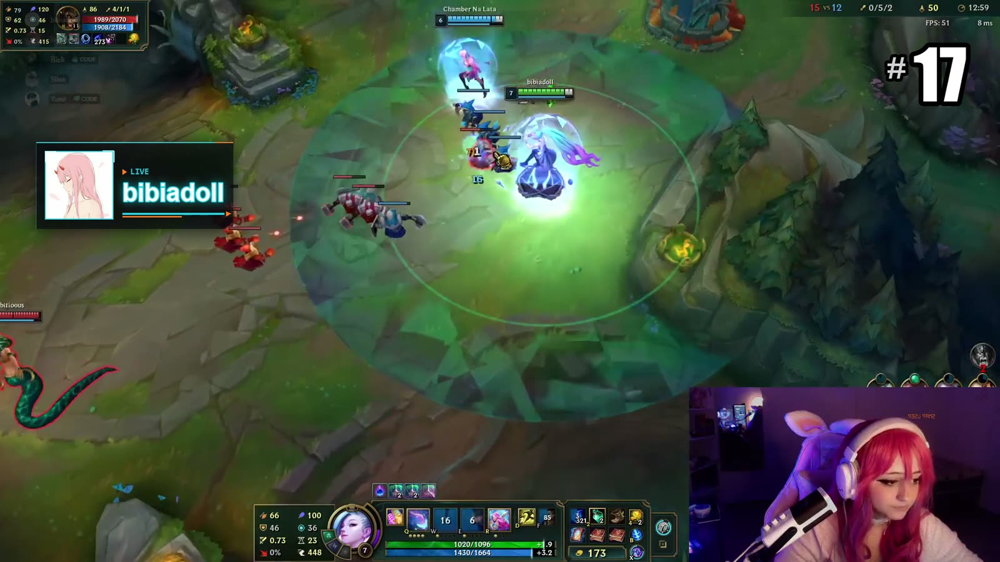
Captions show one to three words at a time and never overlap, so the video works with the sound off. Many streamers already burn live captions into their stream, and those can't be removed. The pipeline finds them without a model: a caption widget only draws while someone speaks, so it compares the bottom of the frame during speech with the same area during silence. Whatever appears only during speech is a caption.
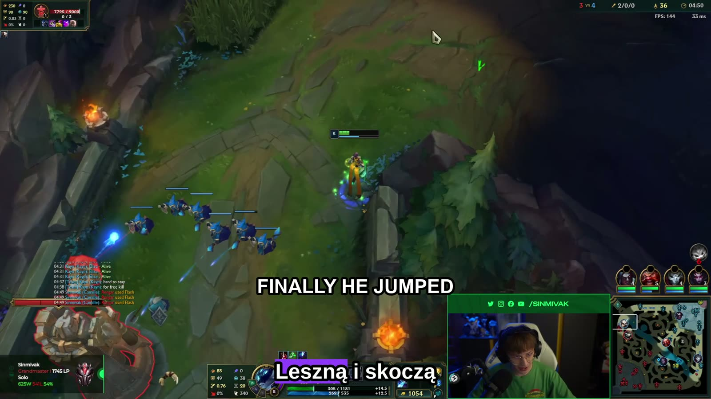
An English source caption means we add nothing. A caption in another language, like this Polish one, gets the English translation above it. -
Plain code
Write the credits, draw the thumbnails
The description gets a chapter for every clip and a link to every streamer's channel. Thumbnails are composed in Python from the champion's splash art, the streamer's avatar and a short hook, in three colourways.
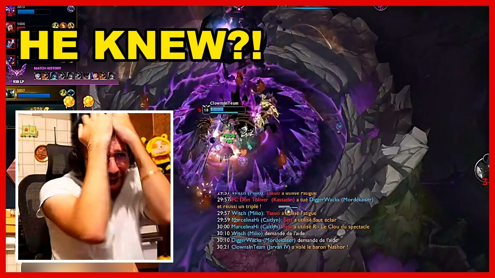
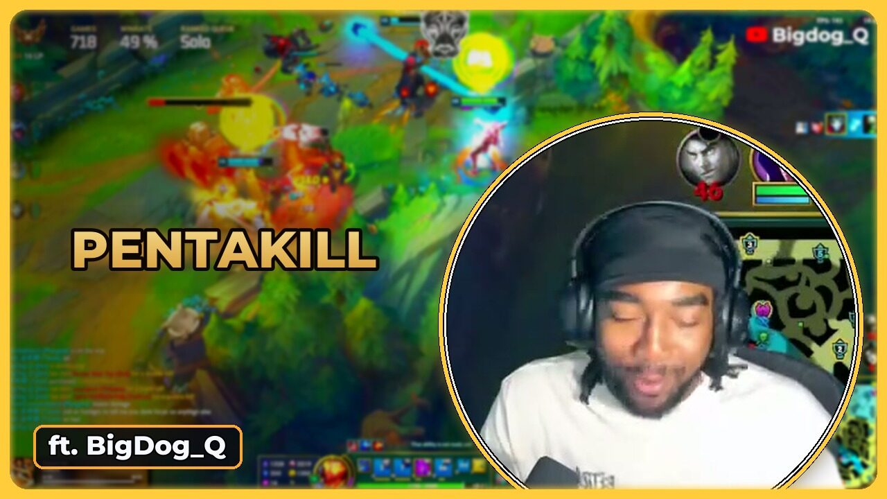
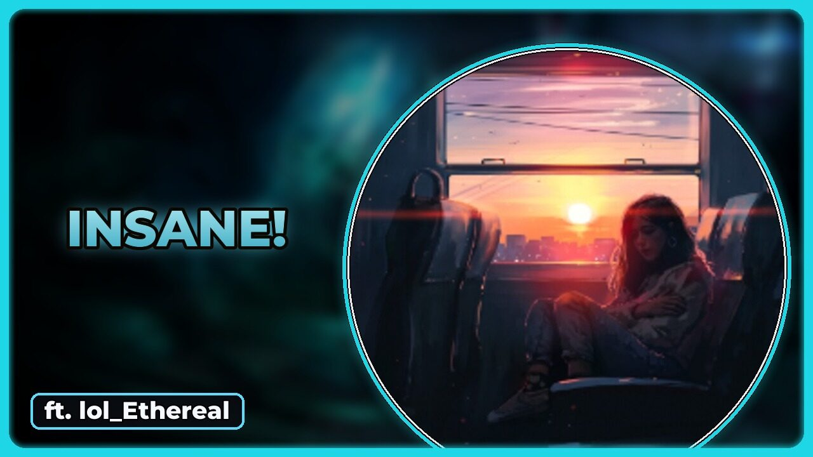
-
19 minPlain code
Upload
A resumable upload through the YouTube Data API. The video id is recorded, so if the run crashes and restarts it can't upload the same day twice.
-
4 minPlain code
Cut three Shorts
The three best clips are cut to about 30 seconds and turned vertical. When a webcam is found, gameplay goes on top and the streamer's face below; otherwise the gameplay is centred and zoomed in slightly. A clip only counts as having a webcam if the face moves between frames and shows skin tones, which stops HUD portraits and champion art from being mistaken for the streamer. If the streamer already burns English captions into their stream, the Short adds none of its own.
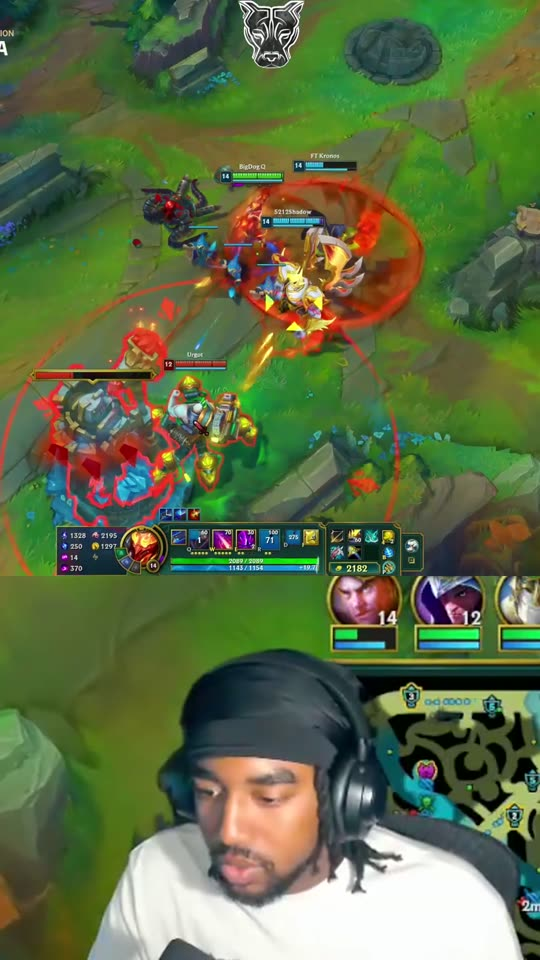
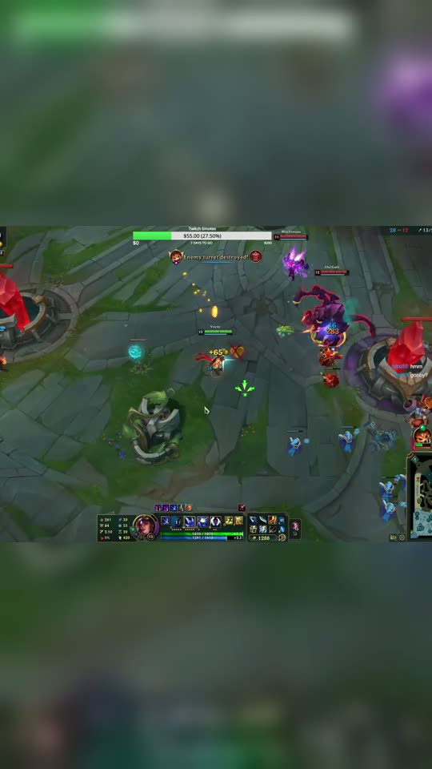
-
Plain code
Clean up
Raw downloads older than a day are deleted. A finished video is only deleted after YouTube has confirmed it.
Three decisions that shaped it
Cheap first, expensive last
Free code discards three clips in four before any model runs. Sending all 219 to Gemini would take eleven days of one model's free allowance.
Models describe, code decides
What a model saw is cached; whether that's good enough is a function anyone can read and test. When a clip is wrongly rejected, the reason is a line of code.
Degrade, never stop
No key: judge locally. Quota gone: next model. No billing: draw the thumbnail locally. No GPU: use the CPU. Tests cover each fallback with no network, GPU or keys.
Open problems
Measured on real nights.
The pro-broadcast check is often wrong
On one audited night it was right about 2 of 7 rejections. The other five were ordinary streamers.
The judge watches a low-resolution copy
Twitch now serves a vertical 360p file first, and the judge reuses it instead of the 720p version it was designed for.
Some webcams go undetected
Checked by hand on 52 clips from a night it wasn't tuned on: the right face on most, a wrong one on 2 (a drawn overlay character and a menu screen), and about 7 small or dark webcams missed. A miss falls back to zoomed gameplay, so the Short still works.
The filters are tuned on small samples
Thresholds were set by hand against a few dozen labelled clips. A review queue now samples every filter's decisions each night to build a proper test set.